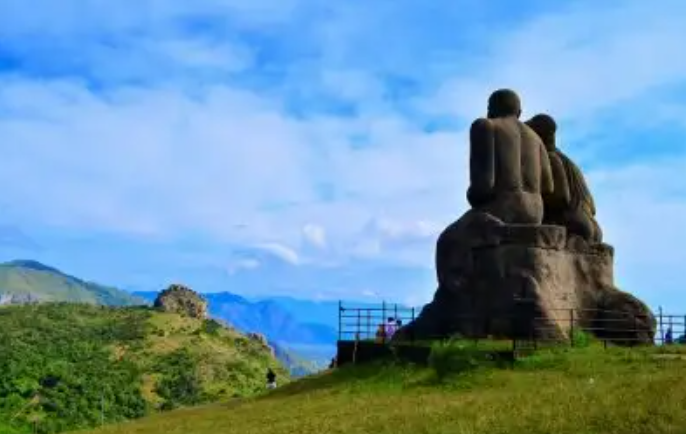

Idukki Dam
The Idukki Dam is a double curvature Arch dam constructed across the Periyar River in a narrow gorge between two granite hills locally known as Kuravan and Kurathi in Mariyapuram village in Idukki District in Kerala, India. At 168.91 metres, it is one of the highest arch dams in Asia. It is constructed and owned by the Kerala State Electricity Board. It supports a 780 MW hydroelectric power station in Moolamattom, which started generating power on 4 October 1975. The dam type is a concrete, double curvature parabolic, thin arc dam. The Indo-Canadian project was inaugurated by the Prime Minister Indira Gandhi on February 17, 1976. This dam was constructed along with two other dams at Cheruthoni and Kulamavu. Together, the three dams and Two saddle dams, Kulamavu Saddle Dam and Kulamavu Saddle Dam have created an artificial lake that is 60 km² in area. The stored water is used to produce electricity at the Moolamattom Power house, which is located inside nearby rocky caves. Narakakkanam, Azhutha, Vazhikkadavu, Vadakkepuzha and Kuttiar diversion schemes were later added to augment the Idukki reservoir.

Hill view Park
Can enjoy the cool breeze and light rain, . Cheruthoni Idukki Dams can be seen in a single frame along with the Idukki Reservoir which is full from the view point of the park. Hill View Park is located close to Idukki Dam and Cheruthoni Dam. The park is 350 feet above the water level of the dam. Hill View Park is located at a distance of 1.5 km from Idukki. The beautifully landscaped garden is spread over 8 acres. It also has a natural lake to add to its charm. As the name suggests, visitors can get a beautiful view of the environment from here. Deer, wild buffalo and elephants roam freely in their natural habitat. A boat ride through the lake will make the views of the forest a little closer and more vibrant. There is a garden of herbs and playgrounds where children can have fun. A visit to Idukki would not be complete without visiting Hill View Park. From here, you can copy some of the weirdest pictures you will ever remember. The park provides a splendid panoramic view of Idukki Dam and Cheruthoni dams together.

Cheruthoni Dam
The Cheruthoni Dam, located in Idukki is a 138m tall concrete gravity dam. This dam was constructed in 1976 as part of the Idukki Hydroelectric Project along with two other dams Idukki and Kulamavu. The Government of Canada aided the Project with long-term loans and grants. The dam was constructed by HCC and the consultant was S.N.C.Inc., Canada, The water impounded by these three dams of Idukki, Cheruthoni & Kulamavu has formed a single reservoir spread over 60 km² on a height of 2300 ft above Mean Sea Level. The Idukki Dam is a double curvature arch dam constructed across Periyar River in a narrow gorge between two granite hills and is the tallest double curvature arch dam in Asia. The spill way of the Idukki Reservoir is in the Cheruthoni dam. Kulamavu Dam was constructed to prevent the water escape through a rivulet called Kilivally, 30 km west to Idukki Arch Dam. It is a 100 metres tall Masonry gravity dam. Construction of this Cheruthoni Dam, Idukki Arch Dam and Kulamavu Dam created an artificial lake of 60 km² and the water stored, is used for electricity generation at the Idukki power station.

Idukki Wildlife Sanctuary
Spread across an area of 70 sq. km, the Idukki Wildlife Sanctuary is one of the famous tourist places in Idukki. Situated at an altitude of 450 to 748 meters, the sanctuary occupies the forest land between the Cheruthoni and Periyar rivers and is a natural habitat for several species of animals. Featuring a picturesque lake around the sanctuary, the whole region is covered by tropical, and evergreen trees. This is one of the most popular things to do in Idukki.

Calvary Mount
Of the many popular Idukki places to visit, the Kalvari Mount is a must-visit and one of the most beautiful tourist attractions in Idukki. Offering charismatic views of the gorgeous landscape that stretches from the Idukki Reservoir to the famous Ayyappancoil, your visit to Idukki is totally incomplete without visiting the Calvary Mount Viewpoint. This place is surrounded by beautiful homestays in Idukki offering a perfect vacation.

Ramakkalmedu
A beautiful tourist place with green hills all around, Ramakkalmedu is undoubtedly one of the favorite Idukki destinations which also popular for its trekking trails. The view point atop the hill is the highest point in this area which can be reached by a small trek of 3 to 4 kilometers from Ramakkalmedu Junction. This is one of the best places to visit in Idukki.

Mattupetty Dam
Mattupetty Dam, near Munnar in Idukki District, is a storage Concrete Gravity dam built in the mountains of Kerala, India to conserve water for hydroelectricity. It has been a vital source of power yielding along with other such dams, huge revenue to the states. The large amount of perennially available water allows wild animals and birds to flourish. However salinity caused by irrigation and water-logging are of concern to environmentalists. The height of the dam is 83.35 metres and the length is 237.74 metres. Taluks through which release flow are Udumpanchola, Devikulam, Kothamangalam, Muvattupuzha, Kunnathunadu, Aluva, Kodungalloor and Paravur

Thommankuthu Waterfalls
Thommankuthu Waterfalls is a series of 12 falls or kuthus (locally known) spread over an area of 5 kms and fall from a height of 40 meters. The 12 falls that vary in height and pass through the lush evergreen forests, presents a remarkable sight.The waterfall is eponymous of its founder, Thommachan Kuruvinakunnel, who introduced this beautiful falls to the world. The rich flora and fauna around the waterfall hypnotize the visitors. It is an alluring destination for trekking as it takes you through caves and sleepy hamlets of the tribals.The visitors can enjoy a bath at the falls in summer, but not during the monsoon as the level of water increases.

Anamudi
Anamudi is a mountain located in Ernakulam district and Idukki district of the Indian state of Ke Mearala. It is the highest peak in the Western Ghats and in South India, at an elevation of 2,695 metres and a topographic prominence of 2,479 metres. The name Anamudi literally translates to "elephant's head" a reference to the resemblance of the mountain to an elephant's head. Anamudi is the highest mountain in peninsular India as well as the largest mountain in Kerala. Cheriyam mountain is located at an elevation of 613 m above sea level. The first recorded ascent of Anamudi was by General Douglas Hamilton of the Madras Army on 4 May 1862, but it is likely that there had been earlier ascents by local people. Anamudi peak is one of only three ultra prominent peaks in South India. It is also the peak with the greatest topographic isolation within India. It is the highest point in India south of Himalayas. Thus it is known as "Everest of South India".

Pothamedu Plantations
Pothamedu Plantations, one of the places to visit in Idukki, bedazzles the tourists with its lush greenery. The lush green beds of coffee, the groomed tea gardens, and the wood-shaded cardamom plantations imprint an unforgettable picture in the minds of the visitors.The nature lovers lose track of the time gazing at the beautiful environs of the cloud covered mountains and ravines soaked in a blanket of greenery. The trekkers, hikers, and walkers feel soothed and refreshed by the panoramic beauty of the surroundings.

Eravikulam National Park
Eravikulam National Park is a 97 km² national park located along the Western Ghats in the Idukki and Ernakulam districts of Kerala in India. it is the first national park in Kerala. Eravikulam National Park is administered by the Kerala Department of Forests and Wildlife, Munnar Wildlife Division, which also runs the nearby Mathikettan Shola National Park, Anamudi Shola National Park, Pambadum Shola National Park, Chinnar Wildlife Sanctuary and the Kurinjimala Sanctuary.

Tea Museum
The KDHP Tea Museum is an industry and history museum situated in Munnar, a town in the Idukki district of Kerala in South India. Tata Tea Museum is its official name, but it's also known as Nalluthanni Estate where it is located, or Kannan Devan Hills Plantation Tea Museum.The refreshing tea estates of this hill station look no less than a paradise on earth and are so beautiful that the one who witnesses its charm and magic never really wants to go back home.